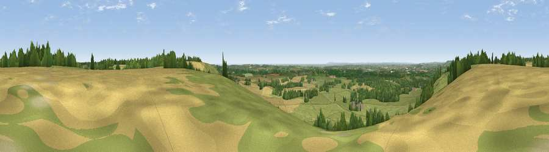

Viewpoint near Hastingleigh
#5264 in England · top 12% of its area beats it · near HastingleighWhere it is
The exact computed spot (TR 09275 43525). Click the marker for map links.
The view, rendered

A 360° render of this exact spot computed from the terrain model, tree cover and land cover — summer colours, afternoon light, calibrated against photographs of famous viewpoints. Real trees, hedges and buildings will differ in detail.
The panorama
Grey silhouette: terrain skyline in each direction (720 bearings, Earth curvature and refraction included). Dashed green: skyline with trees (+15 m) and buildings (+8 m) as obstacles. Blue strip: how far the ground is visible on each bearing.
Where the view opens
Wedge length = distance to the farthest visible ground on that bearing (vegetation-aware). Rings at 10, 25 and 50 km.
What fills the view
53% grassland · 27% cropland · 17% woodland · 2% built-up · 1% water
Angular shares of the visible panorama (visual magnitude), not map area. Landscape diversity 0.49 (0–1 Shannon).
Key numbers
More beautiful places nearby
The staircase of upgrades: each row has a higher view potential than everything closer. Driving times are estimates from straight-line distance, calibrated against real road routing — check an actual route before setting out.
| Place | Direction | Drive | Score |
|---|---|---|---|
| Viewpoint near Hastingleigh | NW · 1 km | ~2 min | 70.7 |
| Viewpoint near Brabourne | SE · 1 km | ~3 min | 71.6 |
| Viewpoint near Brabourne | SE · 2 km | ~5 min | 71.9 |
| Tolsford Hill | SE · 8 km | ~16 min | 77.9 |
| Viewpoint near Capel-le-Ferne | ESE · 16 km | ~28 min | 80.2 |
| Viewpoint near Willingdon | SW · 66 km | ~89 min | 83.4 |
| Wilmington Hill | SW · 68 km | ~91 min | 85.4 |
| Viewpoint near Alciston | WSW · 71 km | ~94 min | 86.8 |
51.15270, 0.99107 · source: screening · position refined by local search. Computed location — check access rights before visiting.